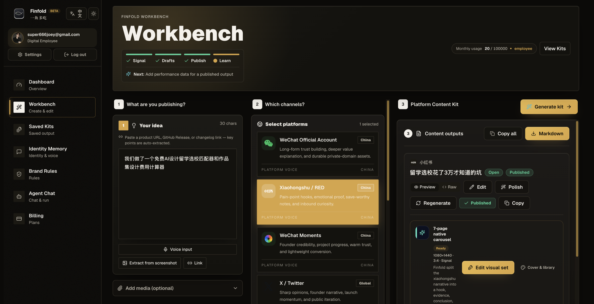
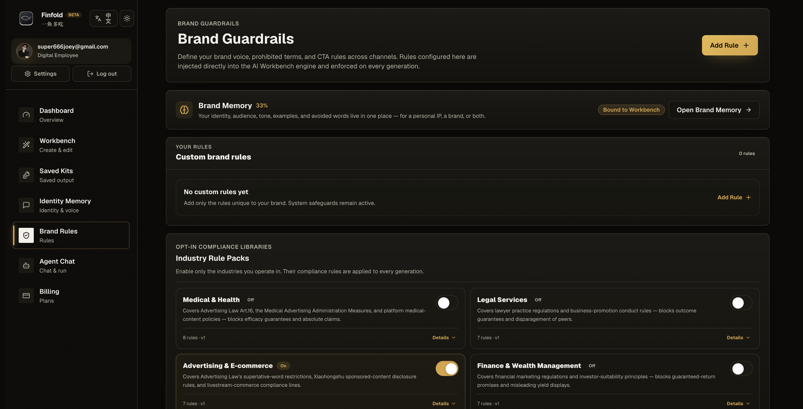
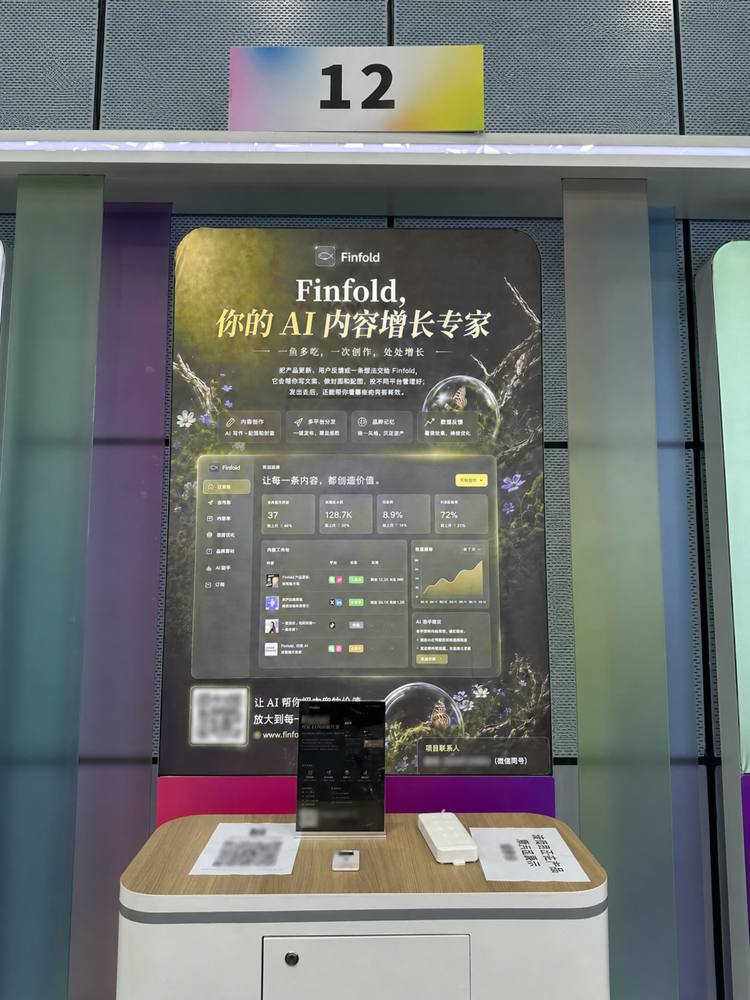
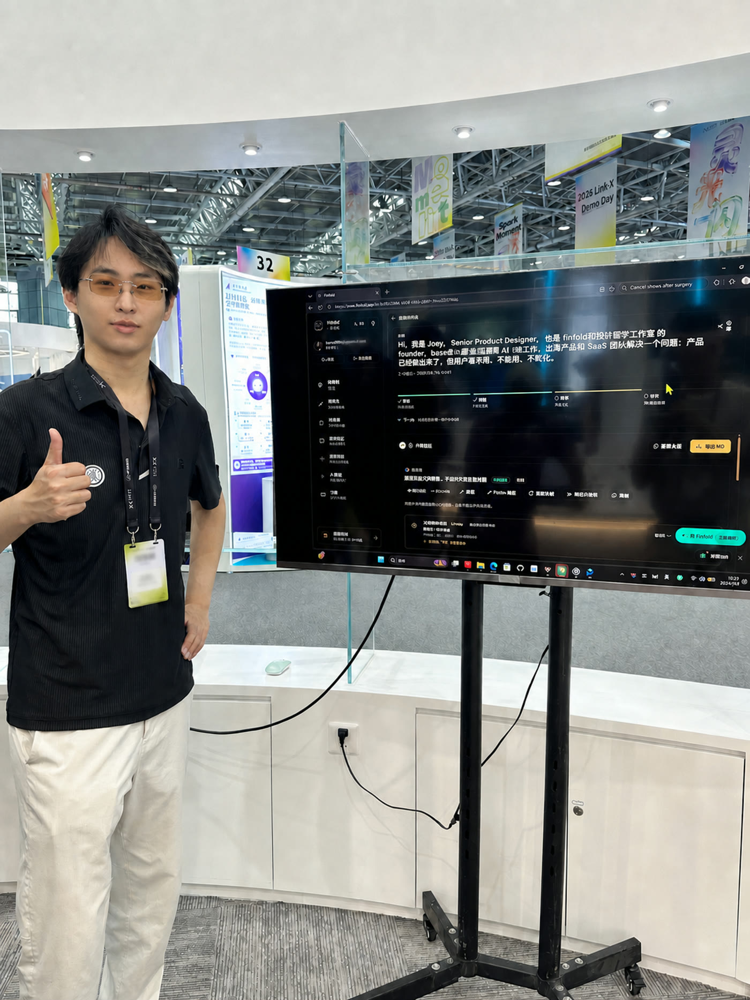

After taking Finfold to Link-X Demo Day, I went back and looked over the whole project. It can now take one product update in, prepare copy and visuals by the rules of fourteen platforms, then carry the published results back into the next round of suggestions. That day I talked about Finfold, and the screen ran Finfold: the live product, without a single design mockup on show.
Standing beside a big screen talking about a product is nothing like sitting at a computer writing a case study. One button, one number, one wait on the page, all of it gets magnified. The smooth path from the design file, once it hits the room: the moment the model runs a little slow or the material runs a little thin, the problems show up immediately.
The thing I care about more is something else. In interviews, interviewers often push hard on the research. The earlier version of this article spent most of its length on how I made the interface, yet after reading it, it was hard to answer a few basic questions. Where did the problem come from, which alternatives had I looked at, how did the research change the product, which conclusions still have no evidence. The product has already stood in the field; the case study should say these things clearly too.
For one piece of content to enter fourteen platforms, the design task lands on organizing facts, contexts, and states. Writing fast is only a small stretch of it.
Finfold's research started with seven rewrites of the same update
Finfold's starting point was very concrete. I had finished a product update and wanted to post it to X, Xiaohongshu, WeChat, LinkedIn, Reddit, and Product Hunt. Copy and paste was fast; the revising afterward was not fast at all. X needs an opening that makes people stop and look. Xiaohongshu needs to touch a trouble in the reader's life first. The WeChat official account needs the whole story told from cause to effect. Reddit is especially sensitive to promotional tone. Product Hunt also needs its own separately prepared tagline, description, and Maker Comment.
I rewrote the same update seven times. Every pass, I wrote down what the change was actually solving. By the later passes the ledger came clear: this work splits into two kinds. Product names, prices, release dates, and capability boundaries must stay consistent. Openings, structure, tone, image sizes, and action entries have to follow the platform. A general chatbot can speed up drafting, yet it still needs me to explain the product and the platform over and over. Publishing once turns into seven rounds of the prompt lottery, and the time saved goes right back into checking.
This stretch of self-observation gave me the first design constraint. One batch of content must share a single set of facts, while every platform needs its own version, its own state, and its own recovery path. Return one big block of text, and the user can hardly tell which item is ready to post, which one is still generating, and which one cited which source.
Fourteen platforms, and what I studied was the task
I then widened the scope to fourteen platforms. Every platform got recorded against the same set of questions. Why do users come here to post content, what job does the first screen carry, how does the text usually unfold, which image sizes are common, what taboos does the community hold against promotion, and which data can be collected back after publishing. The process is closer to task analysis. It never manufactured a grand user persona for me, but it did ground the interface design in concrete actions.
Studying X, the first line and the unfolding rhythm deserve separate treatment. Studying Xiaohongshu, title, cover, body, and save value have to be read together. The WeChat official account carries long-form explanation, and layout and image cadence affect the delivery. Reddit, Hacker News, and Indie Hackers all require the creator to contribute to the community first, and brand exposure has to stay restrained. Medium and Substack sit closer to evergreen articles and subscription relationships, so the way content gets reused naturally differs too.
These differences went straight into the product. The public workbench now supports fourteen platforms and nine image sizes, with at most six platforms selectable per run. That cap also came from a task judgment. Running all fourteen in one go looks impressive, but the waiting and the failure rate climb together. Six is closer to one real publishing batch, and it is easier for the user to check item by item.

Taking three kinds of alternatives apart, Finfold's boundary slowly came clear
I split the common options into three classes and looked at each. General chat tools are good at drafting, but the user still has to supply brand, audience, and platform requirements every single time. Template generators can lock a format down, but they go stiff quickly when they hit a real context. Content-operations suites are strong at calendar, approval, and publishing, while the creation and brand judgment upstream is often still scattered somewhere else.
Finfold chose to chain these stretches of work together. Brand Memory stores positioning, audience, tone, banned words, and approved sample writing. Platform rules handle the constraints before generation. Content cards carry each platform's version and state. Covers and images enter the same content kit. Once the publishing data comes back, the system feeds the next round of suggestions. This path is heavier than a chat box, and that is exactly why the product's value is clearer.
How research changed the interface
- Finding
- Fourteen platforms produce fourteen independent objects, and a chat timeline can hardly express their parallel states.
- Change
- I rebuilt the interface as a spatial workbench, with material, platforms, and outputs visible at once. Mobile then folds into three steps, so the information doesn't crowd onto one screen.
- Finding
- One batch of content needs to share its facts, and it also needs to keep each platform's own tone and taboos.
- Change
- Brand Memory and platform rules enter the generation context, while every card can still be edited, locked, and retried on its own.
Brand rules have to join the work before generation
The early version put the brand check at the very end. All eleven pieces of content would finish generating, and only then would the system hint that the tone might be inconsistent. The reminder wasn't wrong; it just arrived far too late. The user had already spent time editing, and redoing a whole passage only wears people down.
Later I moved the rules ahead of generation. How the brand name is written, which data cannot be changed, which words cannot appear, and what tone belongs to this person, all of it enters the context first. After generation finishes, the system checks once more. The rules thereby turned from a document into executable memory. Advertising, e-commerce, healthcare, legal, and finance content needs stricter boundaries still: superlative claims, efficacy promises, and income guarantees get stopped at the generation stage.

I deleted the illusion of always succeeding
The first-version dashboard had a beautiful set of numbers on it. Forty-two items pending, eleven in review, eighteen scheduled. They made the product look mature, but the source was only demo data. I deleted them in the end. It genuinely hurt a little to delete them, but demo data is demo data, and it cannot hold up an interface that people are going to treat as the real thing.
The early generation flow also had a silent fallback, one I had buried myself. When the model errored, the system stuffed a template in so the card kept showing success. The demo stayed smooth, but the user could no longer tell which content came from the model, which came from the cache, and which was just a template. If one piece of copy carrying a wrong fact really went out, the loss lands on an account the user has spent a long time building. That risk is not worth taking.
In the end I kept the already-successful results, let failed cards explain their own reason separately, and added single-card retry. The public workbench also writes the login boundary into the page. Anyone can look at the full interface first and register a free account only when actually generating. The button never grays out mysteriously; the user knows why they can't continue for the moment.
The waiting states changed along with it. Fourteen platforms can't all come back in the same second, so each card shows reading material, applying rules, generating, and checking. Whatever finishes first appears first, and the user can start editing. I did not write the total time as a pretty improvement percentage, because I never ran an experiment that could support such a number. What I can confirm is that the states became visible and the recovery paths became concrete.
Link-X Demo Day gave this project a new layer of evidence
Link-X Demo Day did not prove that the product has already succeeded. It proved two other things that can stand on the ground. I did bring a running product to a public site, and I could stand beside the interface and talk out the research, the design judgments, and the implementation boundaries.
This matters a lot for a portfolio. Product designers often write the process as an overly tidy line: research yields insight, insight yields a solution, the solution ships and everything turns good. Real projects are not that tidy. Many of Finfold's judgments came out of my own work, part came from platform task analysis, and part came from taking the alternatives apart. A public demo can supply field evidence, and it still cannot pass itself off as user research at scale.


What I can prove right now
As of August 11, 2026, Finfold's public homepage, workbench, and pricing page can match one another. The current public version is v0.9.0-beta.3, supporting fourteen platforms, nine image sizes, and Brand Memory. Visitors who aren't logged in can preview the full workbench, and a free account comes with fifty creation credits. The workbench also states clearly that one run selects at most six platforms, to control waiting and failures on some of them.
This evidence can prove the product is live, that the core path can be seen, and that the commercial plan has entered real pages. It still cannot prove retention, revenue, or growth effects. On why paying users stay, and which kind of returning content truly changes the next generation, I don't have enough data right now.
The next round of research will put the attention back on real tasks. I plan to have founders and one-person companies bring a freshly written product update and complete material input, platform selection, editing, export, and the publishing record inside Finfold. Beyond the interviews, add a one-week content diary, to see what material users come back with, at which step they leave, and which suggestions really get adopted. The research will follow the behavior all the way down, until it can explain retention.
When I look at an AI project, I keep these four questions
- Which stretch of real work did the problem come from, and what evidence does the designer hold?
- Which interface, state, or product boundary did the research concretely change?
- When AI fails, what does the user see, and how can they recover?
- How far can the current conclusions prove, and what will the next round of research add?
- The complete Finfold product case, with the research path, product judgments, field photos, and current capability boundaries.
- The public Finfold site, for verifying the fourteen platforms, nine image sizes, plans, and the v0.9.0-beta.3 status.
- The public Finfold workbench, for verifying the logged-out preview, platform selection, and the login prompt before generation.
- The design-decision judgments in this article come from the current product implementation and the product lead's self-review; the public showing is not written up as user interviews.